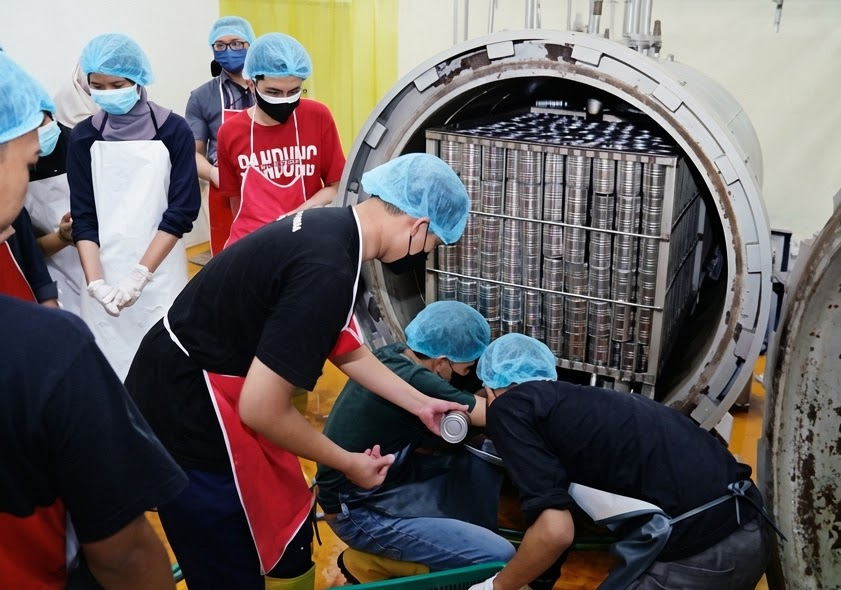

Instansi atau kelompok
Kategori pengunjung dan ketentuan rombongan perlu dikonfirmasi kepada pengelola.
Teaching Factory (Tefa) adalah konsep pengajaran berbasis standar industri dalam lingkungan nyata. Di Politeknik Negeri Jember (Polije), terdapat Tefa Canning yang memproduksi pangan kaleng, salah satunya ikan sarden.
Masuk ↗Jelajahi proses pengolahan hasil perikanan bersama TEFA Canning Polije. Kenali perjalanan bahan baku hingga menjadi produk dalam kaleng melalui pengalaman belajar langsung di lingkungan produksi nyata.
Lihat jadwal kunjungan ↗
Kategori pengunjung dan ketentuan rombongan perlu dikonfirmasi kepada pengelola.
Hubungi pengelola untuk membahas tanggal dan waktu kunjungan yang diinginkan.
Ketentuan pakaian, atribut, dan kebersihan area produksi perlu dikonfirmasi sebelum berkunjung.
Tujuan kunjungan dan jumlah peserta dapat disampaikan saat menghubungi pengelola.
Alur edukasi kunjungan
Mengenal Teaching Factory dan penerapan pembelajaran industri di Politeknik Negeri Jember.
Mengamati penyiapan bahan, pengolahan, dan pengalengan secara langsung di area produksi.
Memahami standar kebersihan, pengujian, dan pemeriksaan kualitas produk kaleng.
Tanya jawab dan refleksi bersama pendamping kunjungan mengenai proses yang diamati.
Kalender ini membantu memilih tanggal. Ketersediaan aktual dan jadwal akhir dikonfirmasi pengelola setelah pengajuan diterima.
Tanggal lampau tidak dapat dipilih. Tanggal pilihan masih menunggu konfirmasi pengelola.